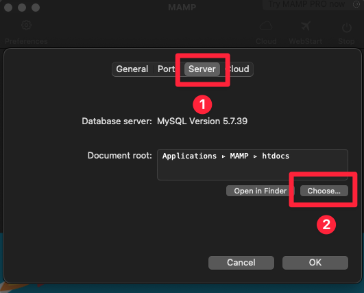
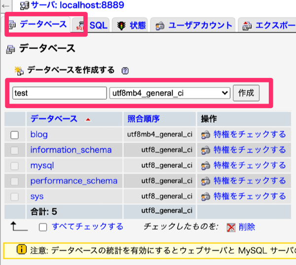
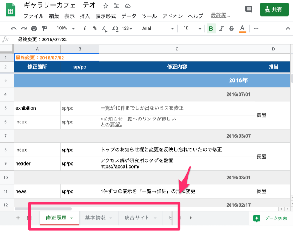
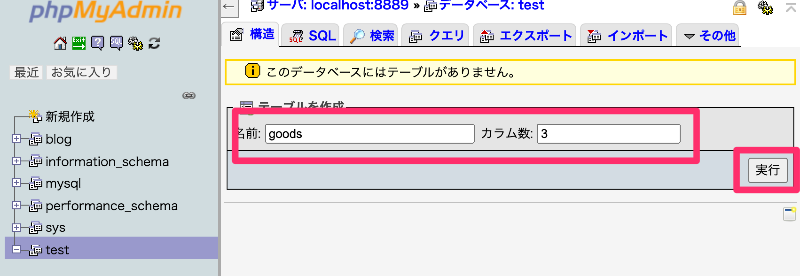
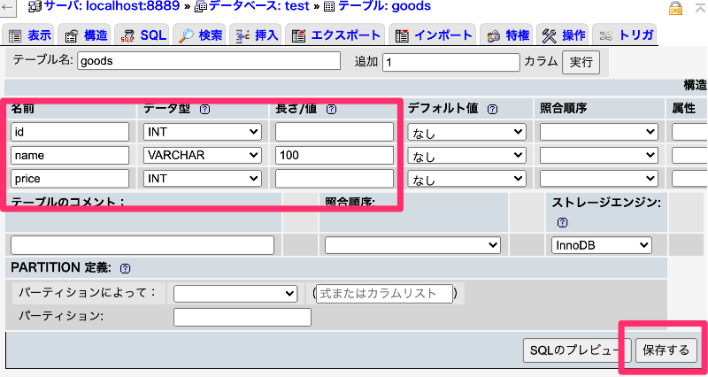
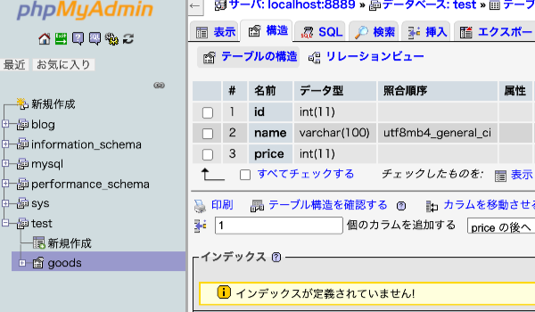
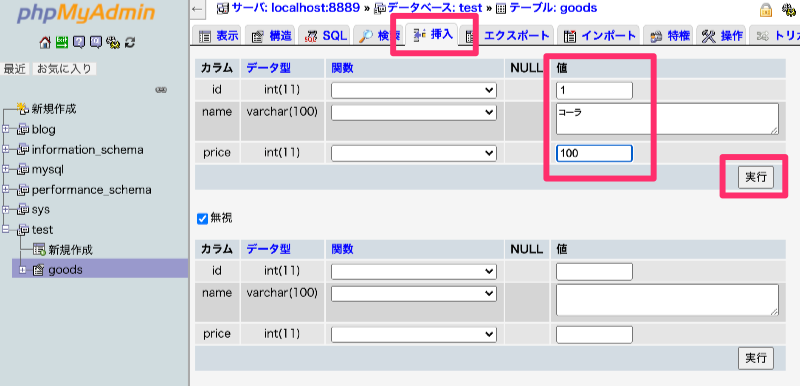
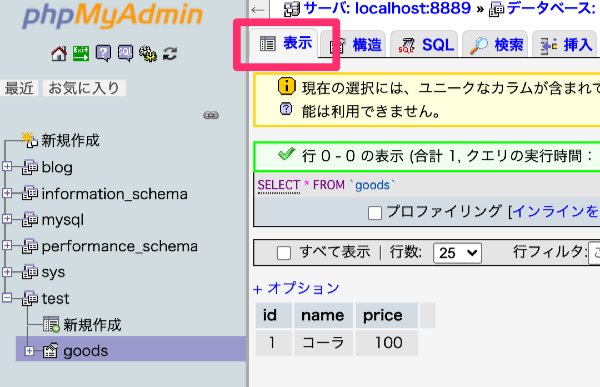
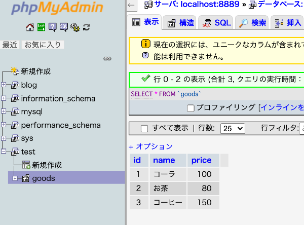

1. PHPとは？
「PHP: Hypertext Preprocessor」の略。HTML内にPHPを埋め込むことで、動的にWebページを生成することができるプログラミング言語の一つ。
- 【PHPで出来ること】
-
- ブログ
- お問い合わせフォーム
- 検索機能
- ログイン機能
- SNS
- ECサイト
- 予約システム などなど
- ※Webアプリケーション・Webサービスの開発に特化した言語
- 【PHPの求人】
「PHP: Hypertext Preprocessor」の略。HTML内にPHPを埋め込むことで、動的にWebページを生成することができるプログラミング言語の一つ。
詳しくは2年生の授業でやりますので、基礎となる部分だけを「さらっと」勉強します。
<!doctype html>
<html>
<head>
<meta charset="utf-8">
<title>PHP TEST</title>
</head>
<body>
<p>2+3</p>
</body>
</html><!doctype html>
<html>
<head>
<meta charset="utf-8">
<title>PHP TEST</title>
</head>
<body>
<p><?php echo 2+3; ?></p>
</body>
</html>PHPには2種類の1行コメントと、1種類のブロックコメントがある。
<?php
// スラッシュ2つで1行コメント
# ハッシュ記号で1行コメント
/*
スラッシュとアスタリスクで複数行コメント（ブロックコメント）
*/
?>PHPにデータを渡してやることで、同じソースコードでも違う内容を表示するWebページを作ることができる。受け渡す方法は以下の2つ。
<!doctype html>
<html>
<head>
<meta charset="utf-8">
<title>GET TEST</title>
</head>
<body>
<h1>フォームデータの送信</h1>
<form action="hello.php" method="get">
<input type="text" name="comment">
<input type="submit" value="送信">
</form>
</body>
</html>★入力フォームに何かを入力し「送信」ボタンを押して、URLの変化を見てみよう。
しかし、データを送っただけではURLが変化するだけで、「動的なページ」とは言えない。
<!doctype html>
<html>
<head>
<meta charset="utf-8">
<title>GET TEST</title>
</head>
<body>
<h1>フォームデータの送信</h1>
<form action="hello.php" method="get">
<input type="text" name="comment">
<input type="submit" value="送信">
</form>
<p>
<?php
$comment = $_GET['comment'];
echo $comment;
?>
</p>
</body>
</html>★Googleの検索エンジンや、 WordPressの仕組みも「GETメソッド」を利用している。
「変数」とは数値や文字列といったデータを格納する箱のようなもの。
// 変数名の前に「$（ドル記号）」を使って定義する
$comment
/*
1文字目にはアルファベットの小文字・大文字、もしくはアンダースコアが使用可能（「a〜z, A〜Z, _」）
2文字目以降には、数字も使用可能
アルファベットの小文字と大文字は区別される
*/
$var
$_var
$VAR345
$str
$STR
# 悪い例
$123var // 先頭が数字
$変数 // 漢字は使用できない<!doctype html>
<html>
<head>
<meta charset="utf-8">
<title>POST TEST</title>
</head>
<body>
<h1>フォームデータの送信</h1>
<form action="hello.php" method="post">
<input type="text" name="comment">
<input type="submit" value="送信">
</form>
</body>
</html>★入力フォームに何かを入力し「送信」ボタンを押して、URLの変化を見てみよう。
<!doctype html>
<html>
<head>
<meta charset="utf-8">
<title>POST TEST</title>
</head>
<body>
<h1>フォームデータの送信</h1>
<form action="hello.php" method="post">
<input type="text" name="comment">
<input type="submit" value="送信">
</form>
<p>
<?php
$comment = $_POST['comment'];
echo $comment;
?>
</p>
</body>
</html>※「GETメソッド」よりセキュリティが強いとはいえ、よくわからないままお問い合わせフォームなどを作ってしまうと非常に危険なので、充分注意してください。
データベースからデータを取得しブラウザに表示してみましょう。ただし、だいぶ難しいので今回はサンプルコードを用いて体験だけしてみる。


※「Excel」で例えると、データベース自体が「Excelファイルそのもの」、テーブルが「シート」のようなもの。

| id | name | price |
|---|---|---|
| 1 | コーラ | 100 |
| 2 | お茶 | 80 |
| 3 | コーヒー | 150 |



プログラミング言語などが扱うデータをいくつかの種類に分類し、それぞれについて名称や特性、範囲、扱い方、表記法、メモリ上での記録方式などの規約を定めたもの。
変数に入る値の種類を限定することで、エラーを回避したり、動作を軽くしたりすることができる。
データを保存する場所は完成したが、まだデータが空なので、いくつか追加してみる。



<!doctype html>
<html>
<head>
<meta charset="utf-8">
<title>POST TEST</title>
</head>
<body>
<?php
// $dsn = '使用DBの種類:dbname=使用するDB;host=ホスト名'
$dsn = 'mysql:dbname=test;host=localhost';
$user = 'root';
$password = 'root';
try {
// PDOのインスタンスを生成
$dbh = new PDO($dsn, $user, $password);
} catch (PDOException $e) {
echo $e->getMessage();
}
// SQLの実行
$query = $dbh->query('SELECT * FROM goods');
//データの取得
$row = $query->fetch();
print_r($row);
?>
</body>
</html>